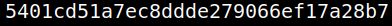

5.3 Get the second flag
1. On your “Reverse Shell” where you are already “root” run the following commands.
python3 -c 'import pty;pty.spawn("/bin/bash")'
root@juggling:/# cd /root
root@juggling:/root# ls
root@juggling:/root# cat root.txt

5401cd51a7ec8ddde279066ef17a28b7